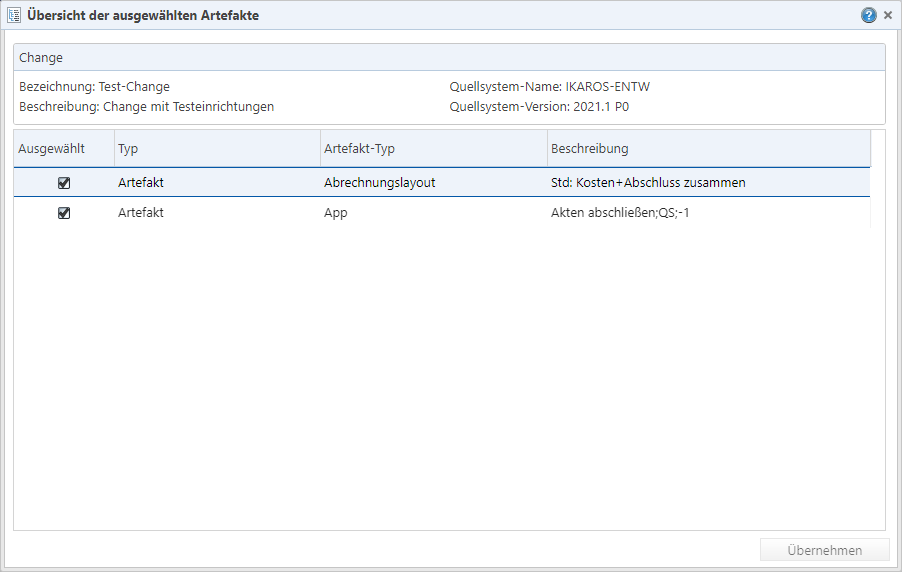

Wenn Sie einen der Einträge aufrufen,
öffnet sich der Dialog für die Transportvorgaben [Link] für das individuelle Artefakt. Dieser
unterscheidet sich je nach Typ des Artefakts. Um Änderungen zu akzeptieren,
müssen Sie auf „Übernehmen“ klicken.
Wenn Sie einen der Einträge aufrufen,
öffnet sich der Dialog für die Transportvorgaben [Link] für das individuelle Artefakt. Dieser
unterscheidet sich je nach Typ des Artefakts. Um Änderungen zu akzeptieren,
müssen Sie auf „Übernehmen“ klicken.
Abb. 11: Übersicht der explizit als „Ausgewählt“ markierten Artefakte im Artefaktpaket
Der Übersichtsdialog enthält eine Liste mit allen ausdrücklich als „Ausgewählt“ markierten Artefakten über alle Artefakt-Typen hinweg.
Beachten Sie hierbei: Wenn zu den Artefakten noch Unter-Artefakte gehören (die je nach Transportvorgaben eventuell mit ins Paket aufgenommen werden), sind diese hier nicht zu sehen.
Bearbeitungsmöglichkeiten
Wenn Sie einen der Einträge aufrufen,
öffnet sich der Dialog für die Transportvorgaben [Link] für das individuelle Artefakt. Dieser
unterscheidet sich je nach Typ des Artefakts. Um Änderungen zu akzeptieren,
müssen Sie auf „Übernehmen“ klicken.
Wenn Sie bei Artefakten im
Kontrollkästchen „Ausgewählt“ das Häkchen entfernen und mit Klick auf
„Übernehmen“ bestätigen, sind die betreffenden Artefakte auch im Paket nicht
mehr ausgewählt. Bei Changes und Change Sets müssen Sie diese nach dem
Übernehmen ebenfalls noch speichern, damit das Entfernen endgültig durchgeführt
wird.